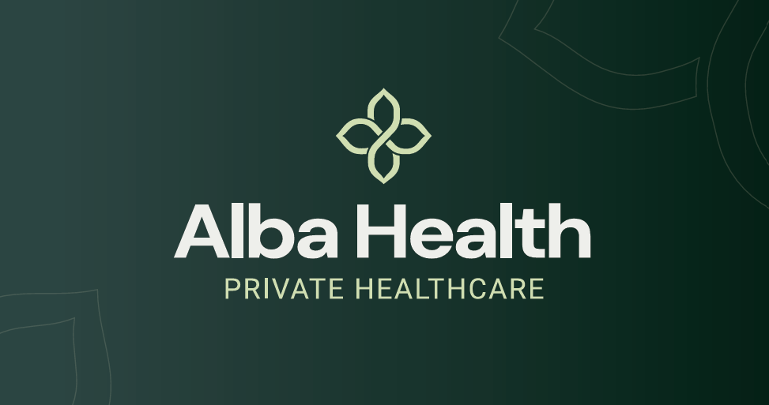

Qualitative conversations exploring real healthcare experiences.
UX Research / Experience Strategy / Brand Direction
Work in progress
Alba Health.
The brief asked for more information. The research pointed towards something clearer.
A private healthcare app concept exploring how a fragmented, sometimes confusing patient experience might become easier to understand and navigate. This is a look at the research, the decisions it influenced and the questions I still need to answer.
Alba
Health.
Health.
Healthcare, made
clear & connected.
clear & connected.

Everyone likes apps. Apparently.
The starting point was fairly straightforward: a client brief proposing an app for private healthcare patients, with more detailed appointment information, clearer explanations of procedures and results, and more information about what happened before and after treatment.
There were also wider ambitions: unify services, make remote consultations possible, educate patients, expand reach and build trust. All reasonable things to investigate. But there were a couple of assumptions hiding inside the brief.
“Everyone likes apps, so it’s the best way forward.” Starting assumption from the project brief
That felt like exactly the kind of sentence worth testing. An app can be a helpful tool, but only if it makes something easier. I wanted to understand what was actually difficult about the healthcare journey before deciding how much technology to put in front of it.
People had information. They couldn't always use it.
We carried out eight semi-structured interviews with adults in their 40s–60s about healthcare experiences across private and NHS services. The conversational format felt appropriate for a sensitive subject: rather than making people fit neatly into a questionnaire, it gave them room to describe what had frustrated or worried them.
The sample was small and exploratory, so it isn't representative of every healthcare user. It did, however, show repeated points of friction that were worth designing around.
Our research synthesis grouped the problems into five recurring areas.
The problem appeared to be clarity and continuity, not simply the volume of information.
Feeling unheard
Some participants described rushed or impersonal consultations and feeling that symptoms weren't taken seriously.
Unclear next steps
Waiting for results, understanding prices or knowing what to do after treatment could leave patients uncertain.
Results without meaning
Numbers, flags and medical terms were not always accompanied by explanations people could understand.
Disconnected information
Booking, insurance, medical records, results and follow-up were split across systems and phone calls.
Digital friction
Broken forms, difficult navigation and app sign-up problems sometimes pushed patients back to the phone.
“Because it was in red, I immediately assumed the worst...” Participant describing a flagged test result with no explanation, excerpted from the research synthesis
More information wasn't necessarily more useful information.
One participant had seen a flagged result without any notes to explain it. Another described bouncing between three different systems to sort out one issue. Neither problem would automatically be solved by adding another screen of medical terminology.
What seemed to matter was whether the information helped someone understand their situation and know what came next.
This wasn't a tested final solution. It was a better problem definition to take into design.
Turning the findings into something we could design around.
Keep the journey together
Reduce unnecessary jumps between appointments, results, prescriptions and follow-up.
Explain before expanding
Lead with plain-language meaning, and let people access detail when they need it.
Always show what happens next
Give each stage a clear status, expected timeline or next action wherever possible.
Make digital earn its place
If the app creates more work than calling someone, the app hasn't solved the problem.
These became working principles, not validated rules. They helped keep the experience focused as the project moved from research into structure.
Plenty of services. Not always one journey.
I reviewed Bupa, Nuffield Health, Vitality and the NHS App, comparing who each experience served, its core features, strengths, weaknesses and possible opportunities. The research showed useful patterns around booking, records and access to care, but also suggested how fragmented a patient's journey could become when different services lived in different places.
The opportunity for Alba wasn't to compete on the longest feature list. It was to make the important parts feel joined up, with clear priorities and fewer unnecessary hand-offs.
Looking beyond the appointment itself.
The persona and journey map let me consider more than the moment someone presses “Book”. The relationship starts with discovering a service, passes through comparing options and arranging care, then continues into managing results, medication and follow-up.
I used Helen, the working persona in the project, as a way of keeping that journey human. She is digitally confident and health-conscious, yet still wants her information together in one place. The persona is a design tool rather than another interview, so the participants' stories remain the real evidence.
The mapping exercise surfaced opportunities around transparent costs, easier sign-in, simpler booking and explanations of results. It also showed how the experience could lose someone's trust long after the initial appointment.
Getting the moving parts into one picture.
The first sitemap was deliberately broad. It brought together history, booking, results, prescriptions, account details and an activity feed. At this stage I wanted to see where the journeys touched, not pretend that every branch was already essential.
That exercise was useful, but it also left an obvious next question: which actions deserve prominence on the home screen, and which can stay a level deeper? That's a decision I'd want to test rather than make on instinct alone.
Three journeys, each solving a slightly different problem.
The interview themes gave us a way to judge the early flows: could booking be easier to understand, could results give people useful context, and could routine repeat prescriptions be simpler to request?
Appointment booking
Service, clinician, appointment type, availability, cost or cover, and confirmation are all accounted for. In particular, checking cost and cover before the final confirmation addresses a frustration surfaced in the interviews.
01
Choose service
02
Select clinician
03
Pick visit and time
04
Review cost / cover
05
Confirm booking
Results and prescriptions
The results flow is where the research connection becomes particularly clear. It doesn't end when somebody opens a result. It continues through details, an explanation and next steps, with a proposed route into follow-up.
A separate prescriptions flow explores how a repeat request might work without a phone call. These are flow proposals rather than working interfaces, and both still need usability testing.
What changed, and what I still need to prove.
One benefit of laying this out as a work in progress is that the difference between an insight and a successful solution stays visible. The work so far supports these design directions; it doesn't yet prove that the proposed flows work.
| Research signal | Patients could feel anxious seeing unexplained flags or numbers. |
Design response:
Explain results and show next steps.
To test: Can people interpret status and identify an appropriate next action? |
|---|---|---|
| Research signal | People moved between separate apps, portals and calls. |
Design response:
Connect records, booking and follow-up in one proposed architecture.
To test: Can people locate the right task quickly without becoming lost? |
| Research signal | Unexpected costs and unclear waits led to uncertainty. |
Design response:
Include cost or cover review and clearer booking stages.
To test: Can people tell what is confirmed, what they'll pay and what happens next? |
Professional, without feeling clinical or cold.
The visual direction started to respond to the same ideas as the UX: reassurance, clarity and a feeling of care. I explored a Celtic-inspired mark, an earthy green, softer supporting colours and welcoming sans-serif typography. It was an attempt to make the experience feel calm and human rather than intimidating.
That is the intention behind the brand, not something I have yet validated with patients.
Shell
#F7F5F1
#F7F5F1
Stone
#E0DCD1
#E0DCD1
Sky
#D5E3E8
#D5E3E8
Honeydew
#D9E3B6
#D9E3B6
Viridian
#344945
#344945
This is still a work in progress. Deliberately.
There's no polished end-to-end interface or usability-tested prototype here yet, and I don't want to pretend there is. What's valuable at this point is that the research has moved the project away from the initial assumption and towards some specific experience questions worth answering.
Done so far
Interview research, synthesis, competitor review, working persona, customer journey, sitemap, core flows and early brand direction.
Still exploratory
Screen hierarchy, content design, real interactions, narrowing the most important tasks and how the brand works across a full interface.
Next up
Prototype and test booking and results journeys, involve people with varied digital confidence, assess accessibility and seek appropriate clinical review for medical information.
Future UI prototype / iterations
When interface screens are ready, add them here with the decisions that changed after testing. This space deliberately does not imply the work already exists.
Good research should change the question.
At the start, the job seemed to be building an app that gave patients more information. By the end of this stage, the interesting challenge was different: how could we give people a clearer sense of where they are in their healthcare journey, what their information means and what they should do next?
There is a lot still to figure out. But the early research made it easier to see which problems were worth tackling first, and that feels like a more useful foundation than racing straight into high-fidelity screens.
Healthcare, made clear & connected.
Less about another app for its own sake. More about making a complicated experience feel a little easier to navigate.